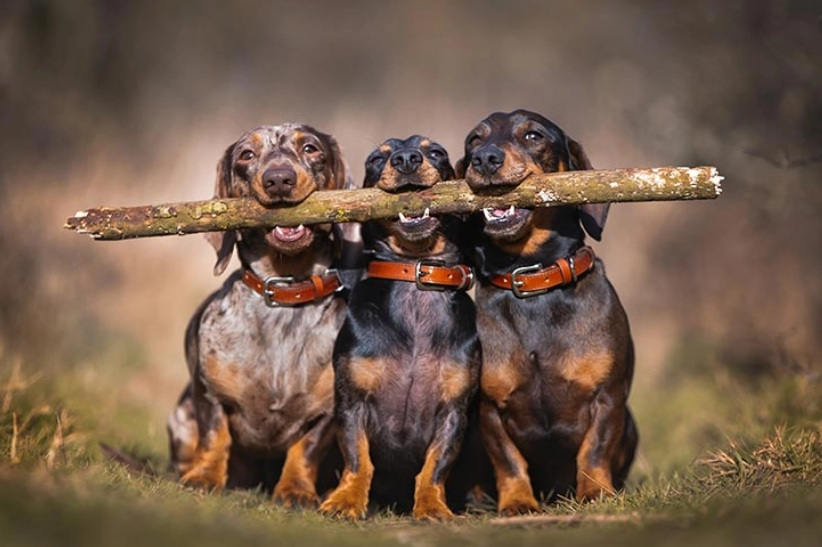
Походження назви
Назва «такса» походить від німецького слова Dachs, що означає «борсук». Повна німецька назва породи — Dachshund — дослівно перекладається як «борсучий собака».
Етимологічний
Taksaa
Вона має таке довге тіло та короткі лапи через
цілеспрямовану
селекцію для полювання на норну дичину.
︽
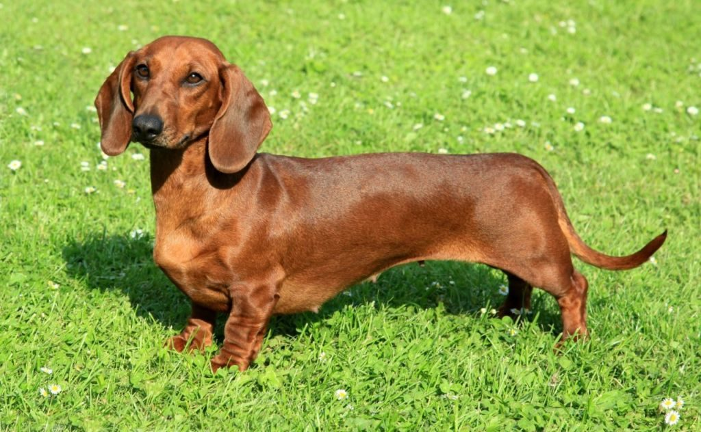
Спеціально виведені для полювання в норах Довгий тулуб і короткі лапи такси — це результат цілеспрямованої селекції. Така будова тіла дозволяла їм без зусиль залізати у вузькі підземні нори та виганяти звідти борсуків, лисиць і єнотів.
Назва перекладається як «борсучий собака» Офіційна назва породи німецькою мовою — Dachshund. Вона складається з двох слів: Dachs (борсук) та Hund (собака). В Україні та багатьох інших країнах також прижилася назва «такса».
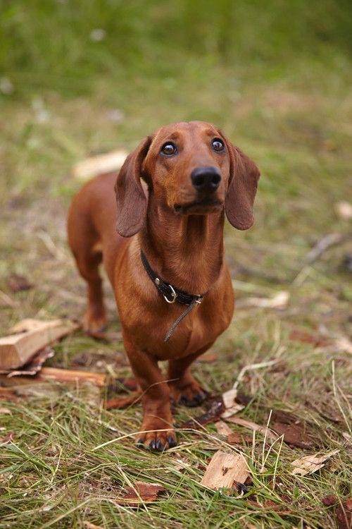
Неймовірно гучний та глибокий гавкіт Для своїх компактних розмірів такси мають вражаюче гучний і низький голос. Це було необхідно під час полювання, щоб мисливець міг почути, де саме під землею перебуває собака.
Перший офіційний маскот Олімпійських ігор На Літніх Олімпійських іграх 1972 року в Мюнхені маскотом став такса на ім'я Вальді (Waldi). Його обрали через стійкість, витривалість та гнучкість, які притаманні цій породі та важливі для спортсменів.

Походження назви
Назва «такса» походить від німецького слова Dachs, що означає «борсук». Повна німецька назва породи — Dachshund — дослівно перекладається як «борсучий собака».
Етимологічний
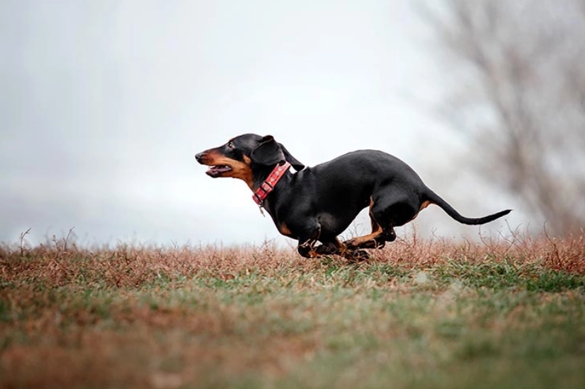
Мисливське минуле
Породу вивели в Німеччині спеціально для норного полювання. Короткі лапи та гнучкий тулуб дозволяли собаці легко залізати у вузькі нори борсуків і лисиць.
Історичний
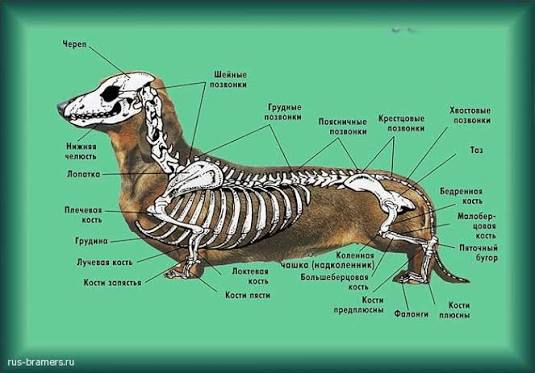
Анатомія та будова
Довгий тулуб і короткі лапи такси — це результат генетичної мутації (хондродистрофії), через яку ріст хрящів у кінцівках сповільнюється, але хребет розвивається нормально.
Біологічний
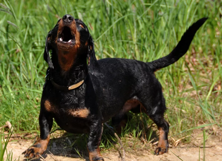
Гучний голос
Попри малий розмір, такси мають дуже гучний і глибокий гавкіт. Це було виведено штучно, щоб мисливець під землею чув, де саме знаходиться собака.
Поведінковий
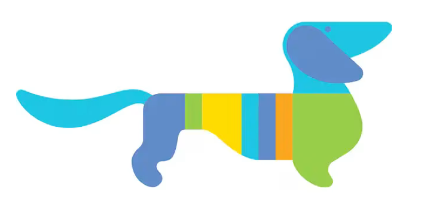
Перший олімпійський талісман
Такса на ім'я Вальді (Waldi) стала першим офіційним маскотом в історії Олімпійських ігор. Вона репрезентувала Літні Ігри 1972 року в Мюнхені.
Культурний
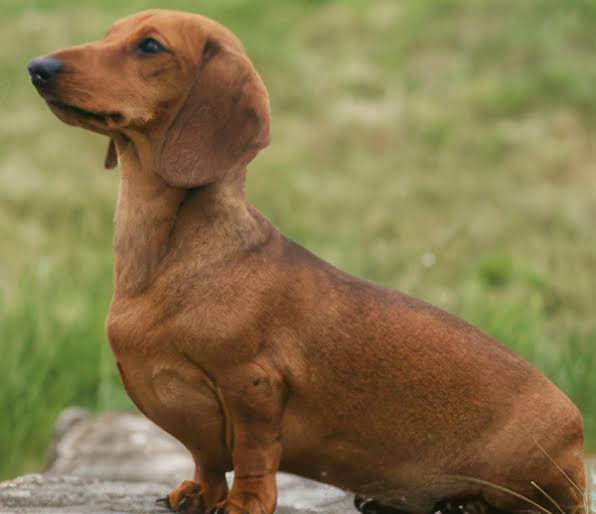
Впертий характер
Такси відомі своєю упертістю та високим інтелектом. Під час полювання в норі собака мала приймати рішення самостійно, без команд господаря, що й сформувало їхню незалежну вдачу.
Психологічний
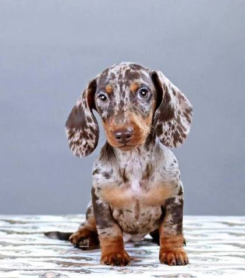
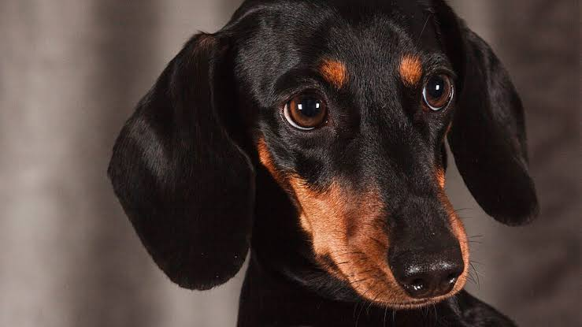
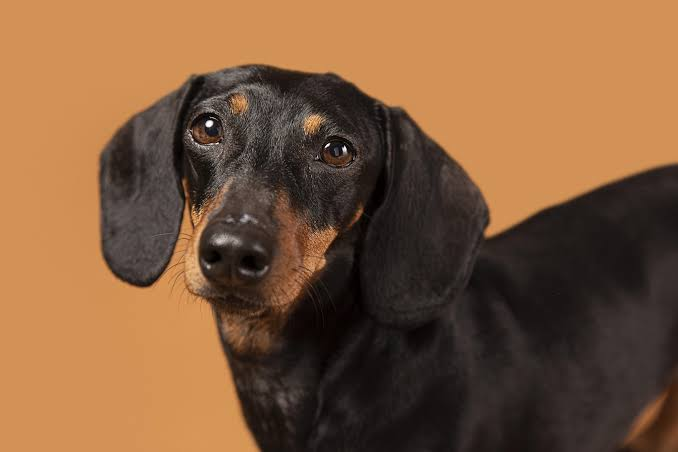
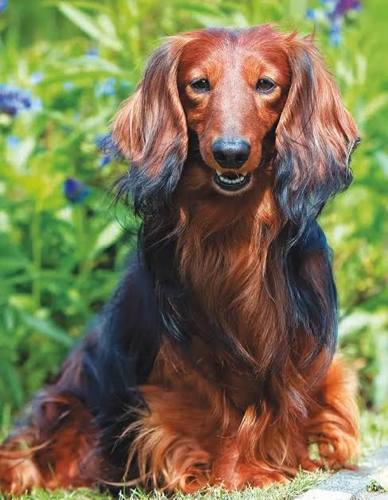
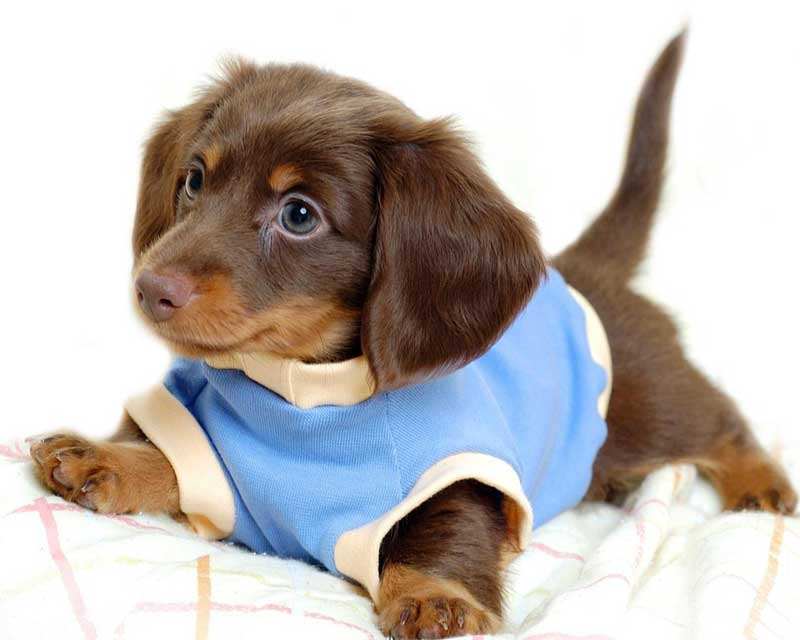
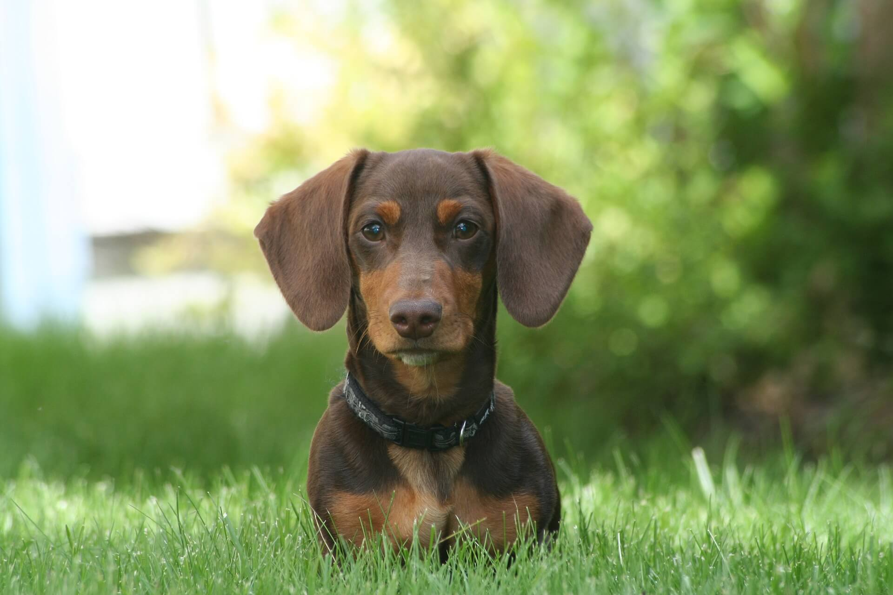
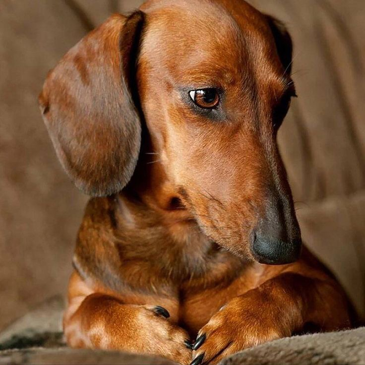
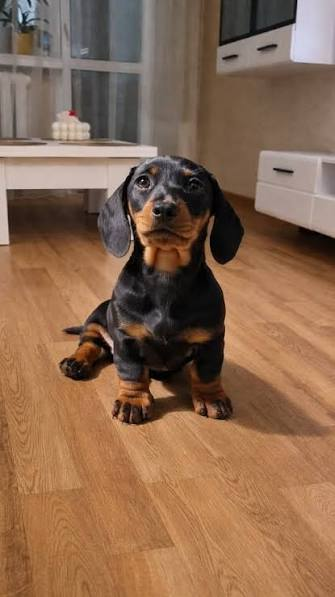
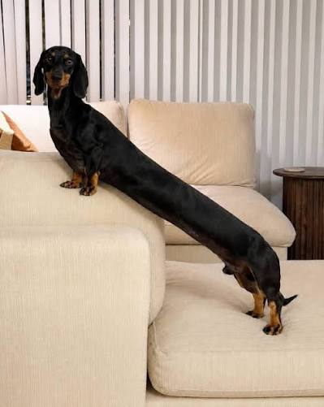
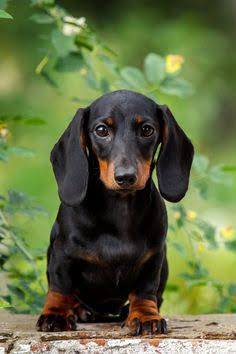